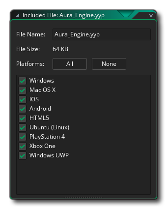
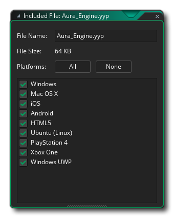

GameMaker Studio 2 no se limita a los recursos que usted crea dentro del programa. Tiene una sección especial en el árbol de recursos de la ventana principal para Archivos incluidos. Aquí puede cargar diferentes tipos de archivos (e incluso crear subdirectorios para ellos) en GameMaker Studio 2 y luego serán incluidos en el juego final como parte del paquete para la plataforma de destino elegida. Entonces, por ejemplo, en un juego de Windows se incluirán dentro del *.exe y exportados cuando se ejecutan, o en HTML5 se incluirán en el html5_game carpeta y almacenada en el servidor.
Para agregar un archivo a sus recursos, debe hacer clic con el botón derecho  en la sección Archivos incluidos del árbol de recursos y seleccione Insertar archivo incluido o, si desea crear un subdirectorio para almacenar otros archivos, Crear grupo. Esto le pedirá que agregue un archivo, o archivos si selecciona más de uno, a la lista. Una vez que se han agregado, puede hacer clic con el botón derecho
en la sección Archivos incluidos del árbol de recursos y seleccione Insertar archivo incluido o, si desea crear un subdirectorio para almacenar otros archivos, Crear grupo. Esto le pedirá que agregue un archivo, o archivos si selecciona más de uno, a la lista. Una vez que se han agregado, puede hacer clic con el botón derecho  en él y seleccione Propiedades para editar las propiedades del archivo.  Aquí puede cambiar el nombre del archivo si elige cambiando el Nombre del archivo. Debajo del nombre del archivo también hay una serie de opciones para la plataforma de destino a las que se debe copiar este archivo incluido. Si desea que solo se exporte cuando ejecuta el juego en un navegador, solo marque la casilla HTML5, y si desea que se exporte solo a los objetivos de Android e iOS, marque esos, y así sucesivamente. Si elige no marcar ningún objetivo, entonces ese archivo no se exportará en absoluto. Esta opción es especialmente útil para aquellos que desean utilizar el Administrador de configuraciones para almacenar ciertas configuraciones y exportar archivos específicos según ellos (haga clic en la configuración que desea usar, marque / desmarque las plataformas que necesita y luego si cambiar las configuraciones se recordarán los archivos seleccionados para cada uno).
en él y seleccione Propiedades para editar las propiedades del archivo.  Aquí puede cambiar el nombre del archivo si elige cambiando el Nombre del archivo. Debajo del nombre del archivo también hay una serie de opciones para la plataforma de destino a las que se debe copiar este archivo incluido. Si desea que solo se exporte cuando ejecuta el juego en un navegador, solo marque la casilla HTML5, y si desea que se exporte solo a los objetivos de Android e iOS, marque esos, y así sucesivamente. Si elige no marcar ningún objetivo, entonces ese archivo no se exportará en absoluto. Esta opción es especialmente útil para aquellos que desean utilizar el Administrador de configuraciones para almacenar ciertas configuraciones y exportar archivos específicos según ellos (haga clic en la configuración que desea usar, marque / desmarque las plataformas que necesita y luego si cambiar las configuraciones se recordarán los archivos seleccionados para cada uno).
Una vez que haga clic en "Aceptar", el archivo se almacenará con su proyecto actual en su propia carpeta llamada data-files encontrado en el directorio del proyecto. Si eligió cambiar el nombre del archivo cuando lo agregó al árbol de recursos, entonces el archivo se almacenará con ese nuevo nombre. Tenga en cuenta que a partir de ahora debe editar los archivos almacenados en esta carpeta y no los archivos originales (a menos que planee incluirlos nuevamente, pero en general no es necesario).
Para obtener más información sobre cómo se almacenan los archivos incluidos con su juego y cómo se accede a ellos, consulte la sección del manual dedicada al Sistema de archivos.
Vale la pena señalar que puede incluir archivos DLL (en WIndows) o DyLib (en Mac OS) como archivos incluidos y luego crear sus propias funciones personalizadas para tratar con ellos usando external_define. Estos pueden ser utilizados llamando al external_call función.